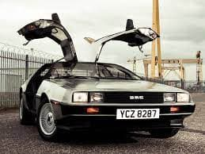

DMC OBLIVION
I am not this man
doused in Egyptian musk
rolling thru the Golden Touch car wash
holding tightly my antenna
Prostate milking
Cosmo talks about it
a new "sex thing" that brings relief
but what is the milk
and how is it formed
and for whom was it intended to nourish?
The truth is sometimes
I want to peruse JC Penny
like a lobotomized Ewok
Sometimes real cars are just matchbox cars
that I can move between my fingers
I used to cut my cuticles w/ a scout's knife
waiting for the RadioShack phone1 to ring
1 encased in the faux amber wood grain of Chinese plastix
On my desk blotter were pyramids of things to say
nests upon nests of conversable topics
no thoughts indigenous to my own mind
It is metaphorically but not
literally true that I listen
to Incubus. That my car is
aqua. My thoughts maroon.
The truth is I have the face of an owl
and the strange club feet of a penguin
my eyes are both too close together
and too deeply set in my face creating
the impression of a stunned neanderthal
my mother collected bargain bin chinoiserie
the truth is I want to live life at the equinox
the sun burning inches above my shiny scalp
Fear is stored in me
in my body and mind
like the battery of a DMC DeLorean

nestled deep in the engine
inches from the hot road
behind the seat
where rich people sit
in a car they own
a car
with wings